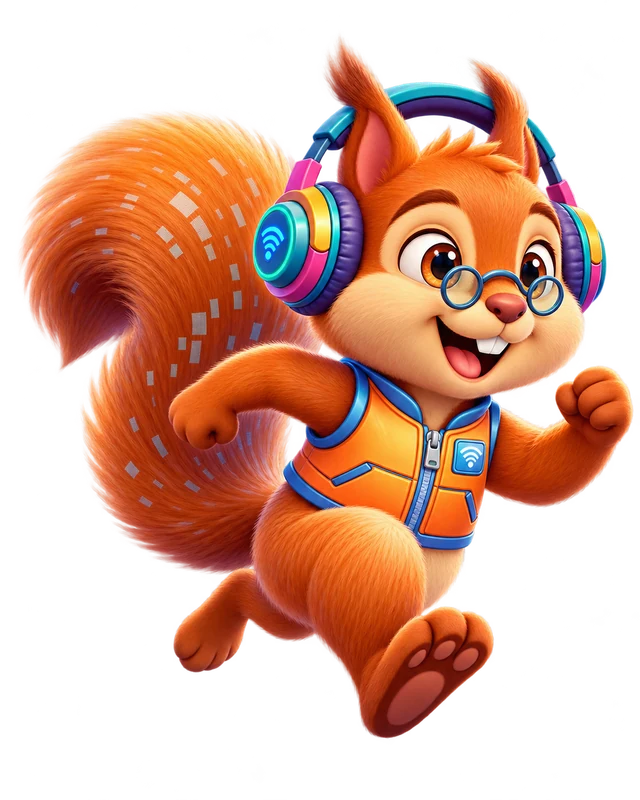

Olá! Eu sou a Ticl@s.

Todas as missões publicadas, de todas as semanas. Cada missão é um ficheiro HTML que funciona no browser, no painel ou no computador. Para abrir um ano diretamente no painel, use o endereço com o ano no fim, por exemplo #ano-2.
| Turma | Missão | Disciplina | Semana | Abrir |
|---|